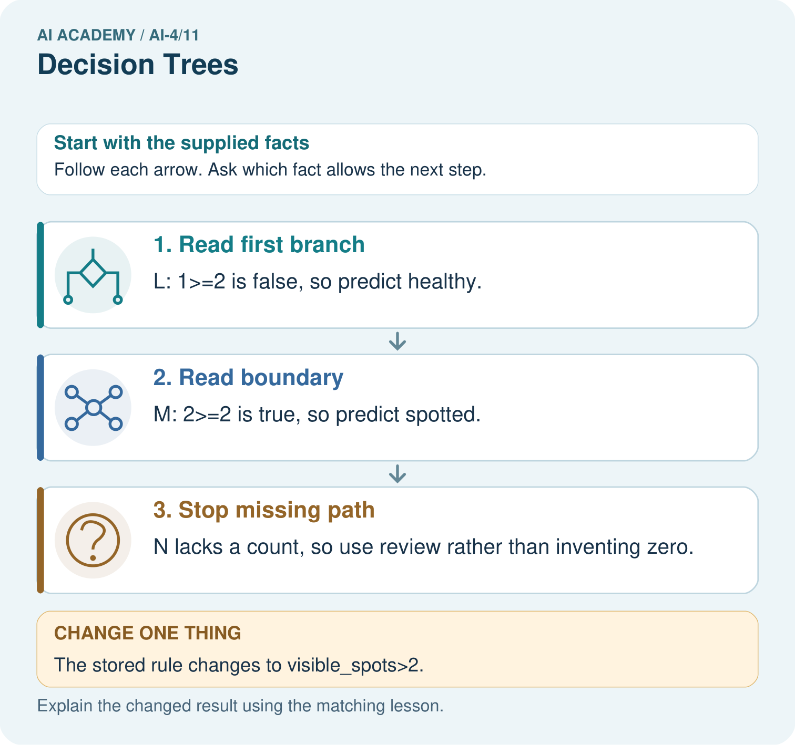

AI Academy · Level 4 · Grade 9 · Week 11 · Workbook
Decision Trees
Learn to understand, design, build, test and explain AI systems responsibly.
Project: Responsible Plant Classifier
Workbook · 1 of 20
Recall and choose your starting point
Try the recall before opening notes. Then use a different colour or a labelled second line to correct your explanation.
Baselines First
Without opening the old lesson, explain one key idea from Baselines First. Give an example and a mistake that the idea helps you avoid.
Leakage
Without opening the old lesson, explain one key idea from Leakage. Give an example and a mistake that the idea helps you avoid.
Inspect Before Modeling
Without opening the old lesson, explain one key idea from Inspect Before Modeling. Give an example and a mistake that the idea helps you avoid.
Workbook · 2 of 20
Practise with fading help
Use W2: Verify the candidate scores for Fitting a decision tree. Record the answer once; the lesson and workbook refer to the same attempt.
| Given inputs | Procedure I chose | Middle steps | Result and check |
|---|---|---|---|
Workbook · 3 of 20
Individual reasoning check
Use the worked case for Fitting a decision tree. Proposed explanation: “A near branch must predict blocked”. Decide whether this explanation is supported. Point to the step or supplied fact that decides; explain your repair if needed.
Workbook · 4 of 20
Independent transfer case
Independent case: Changed independent case
A stored fitted rule says spots >=5 predicts spotted; otherwise healthy. Trace4,5,6 and a missing count. Policy: missing count requires review. Can test labels be used to choose this cutoff?
Attempt this case before feedback. Record any help. Earlier examples below are further practice; a case already practised with feedback cannot establish fresh transfer.
Workbook · 5 of 20
Your learning target
Rule: if spots>=4 predict spotted, otherwise healthy. Trace 3,4,5 and missing. Does applying this rule demonstrate that training found the threshold?
Workbook · 6 of 20
Solve the given case
A supplied tree predicts spotted for spot_count>=3, otherwise healthy.
Trace 2,3,4 and state boundary.
Show your trace, calculation or evidence
Workbook · 7 of 20
Check a changed case
A tree predicts fern when leaf_width_cm <= 3 and grass otherwise. Trace widths 2, 3 and 4. Which case checks the boundary?
My independent answer and reason
Week 11 Test and reflect
Workbook · 8 of 20
Design a revealing test
Create a changed input, boundary case or missing-information case. Write the expected answer or safe response before testing.
| Test record | My evidence |
|---|---|
| Changed input or condition | |
| Expected answer or fallback | |
| Observed result | |
| Why the result occurred |
Workbook · 9 of 20
Project checkpoint
Draw the current Plant Classifier tree and annotate feature, threshold, prediction, and test evidence at each leaf.
The project change and evidence I will keep
Workbook · 10 of 20
Self check
I can explain the mechanism. I can show evidence. I can handle a changed case. I can name a limit. Mark each as not yet, with help or independently, and attach supporting work.
Teacher review ____________________ Next step ____________________
Workbook · 11 of 20
Transfer practice from the original programme
Rule: if spots>=4 predict spotted, otherwise healthy. Trace 3,4,5 and missing. Does applying this rule demonstrate that training found the threshold?
Record support used: none, hint or teacher explanation.
Workbook · 12 of 20
W1 Name the parts and decisions
Identify the root, its two branches, leaf predictions and depth of the worked fitted tree. Which parts were selected using training labels?
Workbook · 13 of 20
W2 Verify the candidate scores
For each near branch and each tall branch, count blocked and clear labels and choose a leaf. Give the total errors for each candidate question.
Workbook · 14 of 20
W3 Separate fitting from prediction
A learner sees a blocked validation case with near=0 and changes that leaf to blocked before reporting the score. Explain what changed and how to report the original fitted tree fairly.
Workbook · 15 of 20
W4 Fit a new tree independently
New training rows (near,tall,label) are (1,0,clear),(1,1,clear),(1,0,clear),(0,1,blocked),(0,0,blocked),(0,1,clear). Use the same candidate order and tie policies. Give both candidates’ leaves and errors, then select the tree. Validation rows are (1,1,clear),(0,0,blocked),(0,1,clear),(1,0,blocked). List tree predictions and compare accuracy with the training-majority baseline.
Workbook · 16 of 20
W5 Audit a tie and a claim
If near and tall make the same training error count, which question does this code retain and why? Does retaining that question prove it will be better on future trips?
Workbook · 17 of 20
Feedback, return check and learning record
| Evidence | My record |
|---|---|
| Worked alone / hint / model | |
| First step I repaired and why | |
| New case checked later; date and result | |
| What I can now explain without notes | |
| One remaining question |
Revisit this idea with your teacher after a delay. Familiarity is different from explaining and using it on a changed case.
Workbook · 18 of 20
Pictorial case practice: Decision Trees
Trace a small fitted tree, including its exact boundary.
Toy stored tree: if visible_spots>=2 predict spotted; otherwise healthy. Missing visible_spots requires review. Inputs L=1, M=2, N=None.
All inputs and outcomes in this worked example are invented classroom data; no real model run is claimed.

Which input distinguishes the original and changed tree? Point to the relevant step in the picture, then write the changed result and the rule or evidence that supports it.
Support used: alone / hint / worked example. This record is practice evidence.
Project connection: For your Responsible Plant Classifier, save the input, procedure, observed result and limitation of this check. Label this worked example as practice; use a different, previously unreviewed case when checking independent understanding.
Workbook · 19 of 20
Project portfolio milestone
Project: Responsible Plant Classifier
Current milestone: Make a transparent first version. Keep a trace of how one input becomes an output; explain the rule or learned component.
For your Responsible Plant Classifier, save the input, procedure, observed result and limitation of this check. Label this worked example as practice; use a different, previously unreviewed case when checking independent understanding.
| Evidence to keep | My record |
|---|---|
| This week’s input and deciding step | |
| Prediction and actual result (or labelled paper trace) | |
| One change since the previous checkpoint and why | |
| One error or limit and the next test |
Workbook · 20 of 20
Supported practice and learning evidence
Use this supported practice once, in the browser or on paper. Keep the reserved independent assessment for a separate first attempt before teacher feedback.
Trace a small fitted tree, including its exact boundary.
Practice 1: explain the deciding evidence
Which labelled step matches this detail? N lacks a count, so use review rather than inventing zero.
1. Read boundary
2. Read first branch
3. Stop missing path
Hint if needed: Read the steps in the pictorial case. Match the supplied detail to the stage that performs or records it.
After your attempt, compare with the supported explanation: Stop missing path N lacks a count, so use review rather than inventing zero. Read the picture in order. N lacks a count, so use review rather than inventing zero. The arrows show which recorded input or intermediate result each decision uses. Explain the deciding step aloud before checking the changed case; pointing to the final answer alone does not show how it follows.
Practice 2: explain the deciding evidence
Changed-case practice: The stored rule changes to visible_spots>2. Which conclusion is supported by the supplied facts?
1. We can decide the result without examining the changed input or the procedure.
2. This one example guarantees correct results for every future input.
3. M is now predicted healthy.
Hint if needed: Use the changed condition and the deciding step in the pictorial trace. The answer must say what follows from those facts.
After your attempt, compare with the supported explanation: M is now predicted healthy. Changing >= to > moves the exact value 2 to the other branch.
Repair a missing building block
Review Baselines First (ai-4/10). Goal: Fit a majority label baseline using training labels only. Short practice: Can the candidate’s training accuracy replace this validation comparison? Point to the relevant step in the picture, then write the changed result and the rule or evidence that supports it.. Return to this week and explain what you changed.
Review Leakage (ai-4/8). Goal: Choose a split unit that matches the intended prediction claim. Short practice: How many independently new plant identities are in the original test? Point to the relevant step in the picture, then write the changed result and the rule or evidence that supports it.. Return to this week and explain what you changed.
Review Inspect Before Modeling (ai-4/5). Goal: Inspect row meaning missing values and repeated records. Short practice: Which original information should the inspection log preserve? Point to the relevant step in the picture, then write the changed result and the rule or evidence that supports it.. Return to this week and explain what you changed.
Predict, run and debug
The browser lab lets you edit the supported Python examples already included in this lesson. Predict first, run, inspect the actual output or error, change one input, then run again. Keep code, predictions, actual results and a reasoned revision together. On paper, label your result as a trace rather than an execution.
Keep your completed work
Use Download completed work in the hosted lesson to export your answers, reflections, practice feedback and code-run evidence. Open the HTML copy to read or print it. Drafts stay in this browser when storage is available; clear drafts on a shared device.